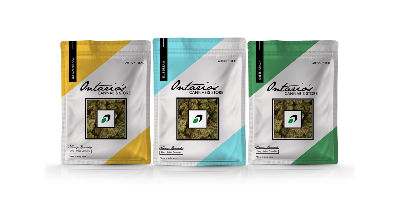

This is was an assignment I never expected in class. However I’m glad I had a chance to do it because it is for such a mixed opinion industry that hasn’t had a lot of design done for it yet. There wasn’t much reference material to work from but I knew I had to create something modern and clean, while also being upfront about what the product was.
This project taught me how to think about all aspects of branding (from logo design to product packaging, website design and even marketing) and how to create a consistent look throughout.
For my logo design, I chose the colours green, white and black to keep things simple while still hinting at the common leaf colour. The shape is also in the form of a leaf to ensure consumers know what they are buying. Finally, the easy to read type is wrapped in a simple box with the logo, making it the perfect icon in one nicely wrapped package.

For my landing page, I wanted to keep it clean so the site is one long landing page. I took lots of inspiration from the LCBO site to give it the official feel. The icon sits in the top center of the page to ensure users know where they are and that it is the official government page. The simple menu sits below, giving only the simplest options to avoid confusion. At the top corners rest a search bar (for anything the user can’t find right away) and shopping cart (for online purchases). The first image is part of a carousel that would cycle promotions and advertisements that would change weekly. Under that is a few pictures and what would continue to be the rest of the site, showing inventory and contact information.

For the product packaging, I used color of the corners to not overwhelm the look but give it a pop to attract attention. The black label tells users the type of product they are buying. I really wanted to bring to light the airtight seal of the bag which would keep the product fresh. In the lower left corner is also a warning to store in a dry place which gives the same effect. Also there is featured the name and weight of product. On top I decided to add the signature of Nancy Kennedy as she is the president of the OCS. The same fonts from the website and logo were used to keep up the consistency. Finally I wanted the user to have a preview of the product which is why I have featured a see through square, then putting the logo in the center to emphasize the brand.

For a social media post, I decided to go with the Facebook template because I think it would be the best place to advertise. I made the text quite big so that nothing was missed. The logo is also featured in the top left to advertise the brand identity as a whole. I really wanted to make users remember that this logo is associated with the OCS. The product is also featured as well as a short summary of what can be found at the store. There is then a call to action to find out more in the corner to drive users who are interested to look into the new products.